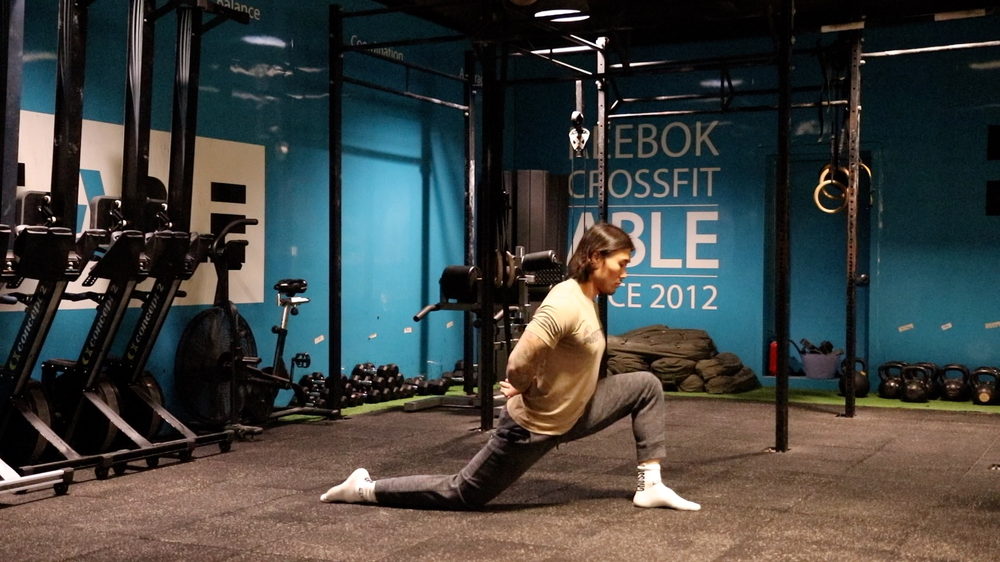
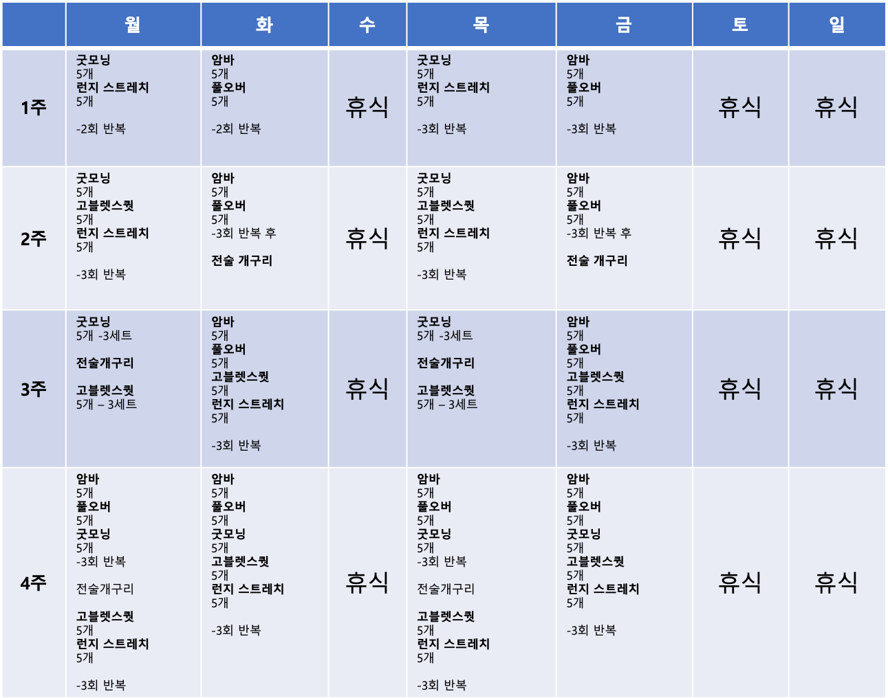

우리의 운동 수행에 필요한 범위는 어느정도일까 ?
뻣뻣한 몸과 싸울것 없이, 자유로워 진다면?
어릴적 가동성을 되찾을 수 있다면 삶이 얼마나 더 즐거울까?
우리 일상 생활과 스포츠 활동에 도움을 줄 강력하고 유용한 유연성에 대해 말하고자 한다. 관심이 있는가?
이 간단한 4주 프로그램을 따라가면 놀라운 결과를 얻을 수 있을 거라고 장담한다. 4주만 해보자(총 16회) 그렇게 몸에 생명럭을 불어넣자.
패러다임의 변화
우리의 기술을 향상시키기 위해 뭔가를 배우려고 노력해라.
우리가 이렇게 생각을 바꿀 때 일어나는 일은 자연스럽게 우리의 마음과 몸을 단련시키고, 부상을 막는다. 그리고, 배움은 사람을 젊게 한다.
4노트
엉덩이와 어깨를 몸의 4노트로 부른다.
네 개의 매듭에는 여러 가지 의미가 있다. 설명을 하자면 어깨와 엉덩이가 팔과 다리를 몸에 묶는다는 것이다, 이것은 팩트다.
그러나 더 나아가 매듭이 제대로 기능하기 위해서는 너무 느슨하지도 조이지도 않아야 한다.
매듭이 풀려서 신발이 벗겨지거나 너무 꽉 조여져 있어, 매듭을 풀 수 없고 신발을 벗을 수 없게 되는 것처럼.
매듭이 제대로 기능 하려면 힘과 유연성이 완벽하게 균형을 이루어야 한다.
유연한 강철 같아야 한다. 유연한 강철은 구부러지지만 깨지지는 않기 때문에.
엉덩이와 어깨
앞으로 4주 동안 우리는 엉덩이, 척추, 어깨의 유연성과 기동성을 높일 것이다.
왜일까?
왜냐하면 우리가 이 핵심 영역에서 작은 개선이라도 할 수 있다면, 이 개선은 나비효과로 다가올 것이기 때문이다.
"운동선수는 엉덩이부터 움직여야 한다"는 말이 있고,
강한 엉덩이를 가지고 있지 않다면 그 부하와 데미지는 무릎이나 등 아래쪽에 나타난다.
무릎이나 허리 아래를 다친 적이 있는가?
이 4주 계획은 훈련 전에(운동전) 하도록 설계되어 있다.
다른 운동이나 활동은 스케줄에 따라 할 수도 있지만, 이걸 먼저 하라.
워밍업이나 운동이라기 보다는 개인적인 운동 레슨이나 연습으로 간주한다.
움직임
케틀벨 고블렛 스쿼트(The Kettlebell Goblet Squat) 작가 겸 체력 코치인 댄 존은 케틀벨 고블렛 스쿼트를 개발했고.
우리는 이런 형태의 쪼그려 앉는 연습을 한두 달 하는 것이 엉덩이와 척추에 극적인 오프닝 효과를 준다는 것을 발견했다.
프론트 스쿼트,백 스쿼트, 또는 다른 스쿼트가 여러분의 최애 스퀏인지 와는 상관없이 고블렛 스퀏은 여러분의 일반적인 스쿼트 성능을 향상시켜 줄 것이다.
손잡이를 잡아라. 마치 핸들을 잡는 것 같다. 그리고 발뒤꿈치 사이로 쪼그려 앉는다.
다음은 두말할 필요도 없는 부분이지만 어쨌든 말하겠다.
*발뒤꿈치를 땅에 대고 정강이를 수직으로 세워라.
*허리를 곧게 펴고, 꼬리뼈가 바닥 아래로 들어가지 않도록 하라.(벗윙크)
*”큰” 가슴을 유지하라.
*아래쪽에서는 팔꿈치를 무릎 안쪽에 놓는다.
*무릎을 밖으로 밀어서 엉덩이를 열 수 있도록 팔꿈치를 사용해라.
*발이 땅에 단단히 고정되어 있어야 한다.
*올라갈 때 엉덩이와 어깨가 동시에 올라오도록 한다.
내려갔을때 잠시 바닥에서 기다린다. 엉덩이,골반을 움직여 작은 숫자 8을 만들고, 엉덩이를 정말로 열고, 척추를 길게 하고, 몸 안에 공간을 만들어보려고 노력하라.
케틀벨 굿모닝 스트레치(The Kettlebell Good Morning Stretch)
햄스트링 스트레칭에서 알고 있는 가장 쉽고 효과적인 동작중 하나는 굿모닝 스트레치와 그 몇 가지 변형이다. 여기 고전적 굿모닝의 매우 효과적인 변종이 있다.
팁 : 발은 어깨 너비,그리고 완전히 똑바로 서라.
*등 뒤에 케틀벨을 붙들어서 꼬리뼈에 얹어 놓아라
*엉덩이부터 움직여서 등뼈와 가슴을 “크게” 유지하면서 꼬리뼈로 케틀벨을 뒤로 밀어내도록 노력하라.
*얼마나 몸을 굽히는지 걱정하지 마라. 케틀벨을 얼마나 뒤로 움직일 수 있는지 걱정하라. 힙 힌지다!
*햄스트링에 아주 강렬한 스트레칭이 느껴지게 될 것이다.
런지 스트레치 (The Lunge Stretch)

어떻게?
1.오른쪽 무릎을 꿇고 런지 포지션으로 들어가게 된다. 오른발의 발등도 땅에 닿을 것이다.
2.무릎과 뒷발이 같은 선에 놓이도록 정렬하라. 왼쪽 다리의 무릎과 발도 정렬한다.
3.이 경우 왼쪽 정강이가 수직이고 무릎이 앞발을 넘어가지 않게 하라.
4.엉덩이를 똑바로 펴고. 엉덩이에 헤드라이트가 있는 것을 상상할 수 있다면, 두 개 모두 똑바로 빛나도록 하라.
5.이제 손을 골반옆에 두고 엉덩이를 앞으로 민다. 앞주머니가 있는 곳인 앞 허벅지와 엉덩이 부위가 늘어지는 것을 느껴야 한다.
6.리듬감 있는 움직임을 사용하여 스트레치에 밀어 넣거나 뒤로 밀어 넣는다다. 템포는 1초 전진, 1초 후진으로 해야 한다.
7.스트레칭을 할 때 한숨을 쉬면 목표 근육이 이완된다.
암바(The Arm Bar)
암바는 어깨, 척추 및 모든 자세에 영향을 준다.
우리는 즉시 몸 전체에 극적인 개선과 개방을 느낄 수 있다.
이제 고전적인 암바 기법을 살펴보자. 암바는 터키쉬 겟업과 비슷한 출발을 한다.
이미 ‘일어나는 법’을 알고 있다고 가정하고 이 글을 쓴다. 만약 여러분이 Get Up을 모른다면 지금 당장 읽기를 멈추고 선생님에게 가서 Get Up을 배워라.
1.오른쪽에 가벼운 케틀벨을 잡고 바닥에 눕는다.
2.오른손을 케틀벨 안쪽에 대고 왼쪽으로 왼편으로 손잡이를 잡고 팔꿈치를 갈비뼈에 대라.
3.굴러서 케틀벨을 올려…..이건 영상을 보자.
다음 4 가지 주요 집중 포인트.
포커스 # 1 - 케틀벨과 팔은 수직을 유지해야 한다. (케틀벨을 실제로 보지 않고 팔을 수직으로 유지)
포커스 # 2 - 엉덩이도 써야한다
포커스 # 3- 오른쪽 쇠골과 가슴을 길게 한다는 느낌적 느낌을 만들어라.
포커스 # 4 - 왼쪽 팔 (바닥에 있는 팔)을 더 멀리, 그리고 더 멀리 보낸다.
**천천히 하자, 수평을 잃는 순간 위험이 다가올 수 있다.
케틀벨 풀오버(The Kettlebell Pullover)
케틀벨 풀오버는 종종 간과되지만 그럼에도 불구하고 강력한 자세 변화기다.
이 허접해 보일수 있는 훈련은 프레스, 저크, 스내치등 멋진 오버헤드 자세를 달성하는 능력에 극적인 영향을 미칠 것이다.
그리고 전반적인 자세에 심오한 영향을 미칠 수 있다.
1.등을 대고 눕는다
2.두 손으로 가벼운 케틀벨을 잡고, 팔뚝 안쪽에 케틀벨의 몸이 놓이도록 하고, 엄지손가락을 손잡이에 꽂아라.
3.케틀벨을 가슴 위로 쭉 눌러라. 마치 벤치 프레스처럼.
4.등과 팔꿈치를 잠궈라. 잠근 상태로 계속 있어야 한다.
5.이제 천천히 케틀벨이 호를 그리며 아래로 움직인다.
6.호흡을 조절하고 호를 ‘풀오버’로 바꾸어 가슴 위로 올려라. 5개에서 10개 사이의 횟수를 반복한다.
참고: 어깨가 풀리지 않고, 팔꿈치를 구부리지 않고, 땅까지 갈 수 없다면, 가능한 한 멀리만 갔다가 돌아와라. 시간이 지나면 제대로 된 동작을 할 수 있을 것이다.
전술 개구리(The Tactical Frog)
전술 개구리는 엉덩이를 믿을 수 없을 정도로 통제하고 전체적인 쪼그리고 앉는 성능을 향상시키기 위한 마법의 총알이다.
이 동작은 거의 모든 운동 운동에 극적인 영향을 미친다.
4주 프로그램
우리는 이 프로그램을 아주 쉽게 시작할 것이다. 왜냐하면 나는 복잡한 것보다 단순하지만 100%의 작용하기만을 원하기 때문이다.
다음 4주 동안 매주 네 차례씩 하게 것이다. 어떤 날이든 최선을 다해 실행하라. 그리고 두려움은 없다.
4주 말까지 당신은 탄력을 얻고 완전히 프로그램을 수행할 것이다.
